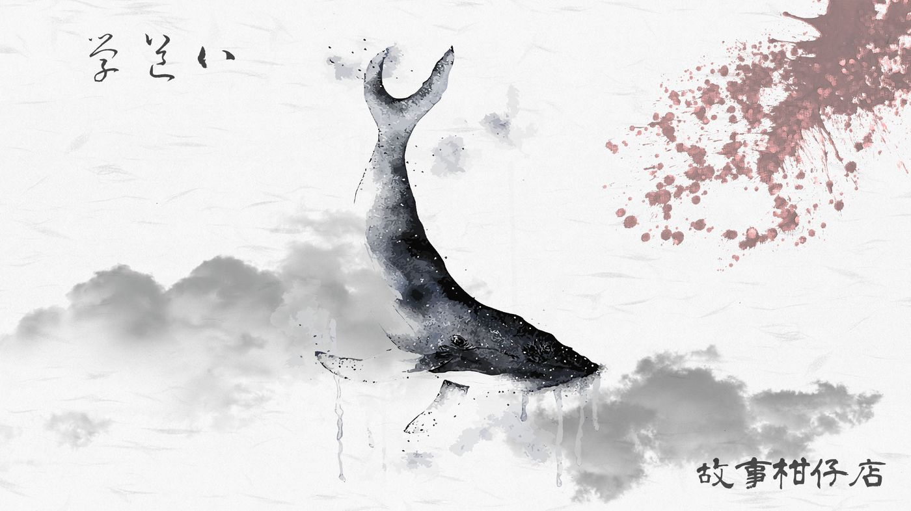

玄墨行者．學道（八）

「在下鯤翁，有一事參詳。」
自稱鯤翁的男人十分矮小，還得仰頭才能對上玄墨行者眼神，但他面無懼色，自有一派風調雨順的威嚴。
「鯤精就鯤精，自稱什麼鯤翁。」天樞斜睨來者一眼，收起七星劍，昂起下巴：「說。」
鯤翁點點頭，禮貌性微笑一下，叨絮說明，原來這次大亂的原委，不過是金雞又啄地牛逗著玩，玩過頭。往昔地牛翻個身，驚嚇多於實際傷亡。誰知這次金雞玩得忘記分寸，惹得地牛動怒，猛力衝撞地層山脈。
這一撞，把各大妖怪聚落都給震得雞飛狗跳，有些圖謀不軌的份子便趁機作亂，才釀成今日大禍。
「所以，你想參詳何事？」天樞依舊冷冷回應。
「妖界秩序是由我們鯤翁兄弟維護的，今日禍亂，我有責任懲處作亂份子，但也有義務保護多數妖族。」鯤翁說道。
「你是在求我們手下留情？」天璇冷哼一聲。
「不如說這是個提議。若我兄弟與眾妖真要與你玄墨衝突，就算齊聚你師兄弟七人，你們也不一定有勝算吧？不如就聽我鯤老一言。」鯤翁不卑不亢，撫著下巴觸鬚說明，今天就由他出面調停，讓玄墨行者收服作亂份子，另一方面召集各大妖怪聚落長老見證，也順道訂下誓約，不再恣意危害人間。
如此一來，妖界不必被趕緊殺絕，但又可止息人間禍亂。
「大膽鯤妖，敢跟我們談條件？今日不斬草除根，禍害遺千年！」天璇舉起三清鈴作勢要搖，卻被天樞制止了。
「老二，別太激動。」天樞打量鯤翁一會，說：「既然妖界之長鯤精都這麼說了。那好，何地調停？」
鯤翁伸出像鰭一般的手，指向沿海石岸：「那兒有個隘口，我將號令所有長老入內。但是，我有一個條件。」他眯起眼睛，打量著天樞，說：「只容你獨自前往，其他人不得靠近。」
天樞答：「行。」
「但我如何信得過你？」鯤翁問。
天樞沒有答話，忽地伸手抽出玉衡頭上的步搖，狠狠割下一綹自己的髮絲，雙手呈上。
鯤翁接過那束摻灰抹白的髮絲，鰭手隨即割下兩條觸鬚，交給天樞。
「兩個時辰後，我們再會。」說完，鯤翁突然一溜煙消失天際，遠方海面濺起朵朵浪花。
「師兄！怎麼可以跟妖族談條件？萬一他們得寸進尺……」天璇立刻嚷嚷起來，一張方臉氣得通紅，腮骨暴起。
天璇尚未說完，天樞便伸出手阻止，接著緩緩開口：「聚集各大妖族長老，豈不方便我們一網打盡？況且，方才若真與鯤精動起手來，憑你我幾人，恐怕還不是他的對手。」
「瞧那隘口，入口處如此狹窄，倘若我們在裡頭發動攻勢，妖怪們插翅也難飛。」天樞又說。
「大師兄，這樣不好吧？」這次，換天權忍不住出聲阻擋。
「天權、玉衡，你倆先搜山，確認沒有妖孽藏身處。」天樞無視抗議，轉頭對天璇說：「你見機行事吧。」
收受指令的天權及玉衡沒有說不的權力，只能目送大師兄及二師兄離開。兩人往山林深處搜去，一路上雖有妖氣殘留，但大致上已恢復平靜。
天權和玉衡沒有說話，耳邊僅剩風拂過林葉的沙沙聲，但他們的步伐卻相當一致，逐漸往隘口靠近。
「大師兄真會做這麼絕嗎？」玉衡忍不住問道。
「他這個人，妳是知道的。」天權抹汗，林間光線愈來愈弱，必須加快腳步。
「但他與鯤精互贈髮鬚立誓了呀！怎能違約？」
「他這個人，妳是知道的。」天權又重複了一次。只是這次，他說得很小聲，像說給自己聽。
太陽即將落入海平面那一刻，愈接近隘口，混濁妖氣便愈重，直撲而來。遠遠地，空氣中傳來一陣淒厲鈴響，天權兩人互看一眼，不約而同凌空躍起，踏石、踩樹、越坡，瞬間來到了隘口入處。
恨的氣味，怒的氣味，驚惶的氣味，咒詛的氣味，以及硫磺混艾草的氣味，混雜著血腥，形成一道無形結界。玉衡率先闖進洞穴，未料再見煉獄。
為時已晚。
這是她今日第二次出現這個念頭。
洞穴裡正中央躺著一隻奄奄一息的碩大鯨魚，四周妖屍遍佈，兩旁崖上布滿木機弩，各族長老無一倖免。
天樞瞅了玉衡一眼，隨即踩上鯨魚身軀，不顧左臂一彎傷口正汩汩湧出鮮血，高舉七星劍戮力戳進牠肥厚腹部。氣凝劍身，魚腹門戶洞開，流淌一地脂肪血水，漫過眾妖屍體。
天樞雙手探進腥臭魚腹，摸索一陣忽而扯出一大塊灰黑色臘狀物體，散發出陣陣臭味。他十分滿意：「不愧是萬年鯤精，這可是上好的香。」
「這是……方才的鯤精？」玉衡喃喃問道，不敢相信眼前所見。
天樞不答，只是環視滿地妖屍，舉起血跡斑斑的七星劍，下了今日最後一道命令：
「斬下眾妖首級，送返各大妖族聚落，告訴他們，這就是禍亂人間的下場。」
－－－－－
#新連載依舊兩天一篇每晚準時六點半喔
#請人客多多指教
#記得去各大書店買我們的書故事柑仔店哩
